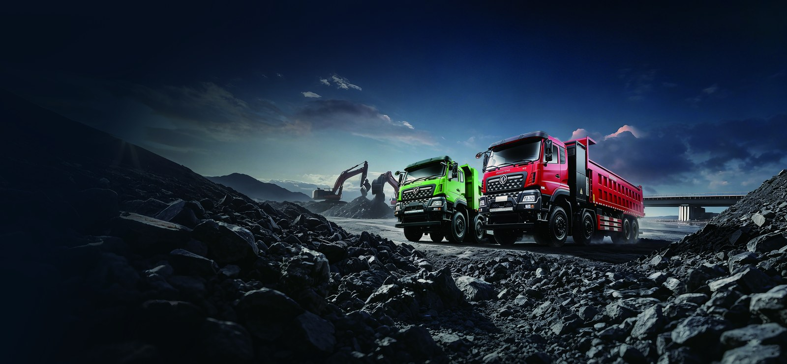

The TE46 electric truck is a 4x2 tractor suited to drayage at Jebel Ali, the Middle East's largest container port, where short container shuttles between quay, yard, and inland container depots repeat around the clock. Drayage is short, dense, and schedule-driven, the ideal electric duty, and the UAE's green port initiatives increasingly reward zero-emission terminal operators. This review covers the TE46's drayage specs, charging between vessel windows, and the compliance angle for UAE operators.
Drayage runs are 5 to 40 kilometers within the port zone and its satellite depots, so there is no range risk, and the tractor passes its own charger dozens of times per shift. Dubai's net-zero commitments and the port authority's sustainability programs are steering concession holders toward electric yard and drayage equipment. For full specs, see the TE46 electric tractor page.
The UAE offers a business-friendly import environment and growing green-logistics incentives. Our UAE electric truck market guide covers registration, free-zone considerations, and the incentive landscape.
The table lists production data for the drayage variant from Shaanxi Fenghan Trading Co., Ltd.
| Parameter | TE46 Value | Note |
|---|---|---|
| Configuration | 4x2 drayage tractor | day cab |
| Battery capacity | 262 kWh | CATL LFP |
| Motor power | 282 kW | LvKong drive |
| GCW | 40,000 kg | laden container |
| Range per charge | 240 to 280 km | port zone duty |
| DC fast charge | 120 kW | 20 to 80 percent in 90 min |
| Warranty | 8 years / 4,500 cycles | battery pack |
| FOB price | $75,000 to $105,000 | drayage spec |
On port-zone duty the TE46 covers 240 to 280 kilometers per charge, far more than a drayage shift consumes, and regenerative braking recovers energy through the constant stop-start of gate queues and yard approaches. The 282 kW motor pulls a laden 40-ton combination briskly away from the quay, and the quiet drivetrain is a genuine asset during night vessel windows in a port that never sleeps.
Operators report 20 to 30 container moves per shift on typical Jebel Ali layouts, with energy consumption so low that a single overnight charge covers a full day shift for most rotations.
The port's natural rhythm provides the charging gaps: between vessel peaks, tractors park for meal breaks and shift handovers, and a 120 kW charger at the fleet yard restores 20 to 80 percent in about 90 minutes. One charger comfortably serves three to four tractors on staggered rotations. Fleets running continuous vessel windows can add a second charger or a battery-swap arrangement for peak days.
Zero tailpipe emissions future-proof the operator against tightening port emissions rules and strengthen bids for concession renewals that score sustainability. On cost, a diesel drayage tractor burns 12 to 18 liters per shift-hour, much of it idling in gate queues, while the TE46's electricity cost is a fraction of that at UAE industrial tariffs, and maintenance falls sharply with no engine idling wear.
The FOB price of $75,000 to $105,000 is recovered within about three years at port utilization, and the 8-year or 4,500-cycle battery warranty covers the full horizon of a typical drayage contract.
Shaanxi Fenghan Trading Co., Ltd. supplies the TE46 with GCC-spec cooling, UAE documentation support, and a Gulf parts buffer. Start with the UAE market guide for registration detail, then confirm drayage options on the TE46 electric tractor page. For Jebel Ali operators, the TE46 electric truck is the fastest route to a zero-emission drayage fleet.
The TE46 electric truck is delivered with a high-voltage isolation monitor, automatic battery pack disconnect on collision, and the multi-layer thermal barrier built into every CATL LFP pack, a chemistry chosen for its stability in hot, dusty, high-utilization duty. Shaanxi Fenghan Trading Co., Ltd. includes a structured operator course with every fleet order, covering regenerative braking technique, state-of-charge planning, charging procedure, and high-voltage shutdown. Fleets that complete the training typically improve real-world range by 6 to 10 percent within the first month, because smooth throttle application and anticipatory regen recover energy that untrained drivers waste as heat. The course also covers daily inspection of tires, coolant, and charging connectors, which catches small faults before they become downtime.
Compliance documentation travels with the truck. Conformity certificates, battery warranty terms of 8 years or 4,500 cycles, and the telematics export of energy and emissions data give fleet managers the evidence base that tenders, insurers, and sustainability auditors increasingly require. For export buyers, that documentation package is as much a part of the product as the steel and the cells.
The battery warranty is the foundation of the ownership case: 8 years or 4,500 cycles on the CATL LFP pack, transferable to a second owner, which means the truck can be sold or refinanced mid-life with a factory guarantee still running. No diesel powertrain offers anything comparable, and that difference shows up in residual value, where documented, warranted electric trucks are clearing stronger percentages of original price than worn diesel equivalents. Fleets that keep disciplined charging habits, staying between 20 and 90 percent state of charge in daily operation, routinely show 85 to 90 percent pack capacity after five years, and the telematics health report converts that directly into resale price.
Maintenance economics reinforce the point. The sealed LvKong motor has roughly one-third the moving parts of a diesel powertrain, with no oil, injectors, turbocharger, clutch, or exhaust aftertreatment to service, and regenerative braking cuts friction brake wear by an estimated 40 percent. The parts that remain are conventional wear items, tires, suspension bushings, filters, and body-specific consumables, all pre-stocked in the Fenghan regional parts buffer for the first year of operation.
From order confirmation to delivery, most UAE buyers take delivery in 45 to 60 days, with Shaanxi Fenghan Trading Co., Ltd. preparing the certification file, the drive configuration, and a first-year spare parts kit in parallel so the truck arrives work-ready. The recommended first step is a route and duty-cycle review: share your daily kilometers, payloads, shift pattern, and depot power capacity, and the team will model range, charging windows, and total cost against your actual operation rather than brochure numbers. That model becomes the backbone of the financing conversation, because banks and lessors lend against documented operating savings far more readily than against projections.
Fleets new to electric trucks should start with two to five units on the most predictable route, instrument everything, and scale after the first quarter of data. Every fleet that has followed that path has expanded its electric share in the second order, because the operating numbers made the argument internally without any further persuasion. Contact the Fenghan export team to begin the route review for your operation.
Ready to electrify your fleet? Contact Shaanxi Fenghan Trading — authorized Dongfeng EV truck exporter. WhatsApp: +86 153 1943 1311 | Email: sales@fenghan-trade.com | dongfengevtrucks.com
🌐 Our Network: Fenghan Trade (SAGMOTO/SHACMAN Truck Export) · 4x2 6x4 tractor truck prime mover